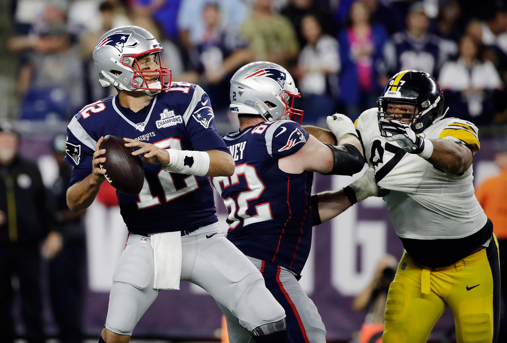

With the Patriots at a current 8-1 record, tied for the best currently in the NFL, they have been more than successful during the season. Tom Brady, one of the greatest quarterbacks to have ever lived is proving that age has not affected his ability to win games. While scouts may conclude that Tommy T is no where near his level of talent from even a couple years back, he has not shown any immediate signs of this. The Pats defense has continued to execute, having allowed only 64 points in the season. The Pats will have a big shot to win the Super Bowl if they keep executing in games.
Many continue to believe the Ravens to be the overrall favorites to win the Super Bowl. Lamar Jackson is one of the most dangerous quarterbacks in the lead, being able to run the ball effectively through a defense. It will be interesting to see how he plays in the big moments.
The 49ers, having an 8-1 record, are one of the best teams to currently be in the league. Jimmy Goropalo has some serious potential as a qb, and will look to bring his team as far as he can in the playoffs. 

The Packers are an important team to keep an eye on. Aaron Rogers has alreay thrown 12 touchdowns
The Saints have had a great season so far even without their star qb drew breeze. Teddy Bridgewater has performed cool under pressure,
Once again, Russell Wilson with the Seahawks are having a successful season. Already having beaten top level competitors like the 49ers, they have a season record of 7-2,
With NFL superstar Patrick Mahomes, the Chiefs have proved that they have the capability of contending for the Super Bowl. Although having a little slip up with Pat Mahomes' injury, they look ready to get back on track with a rather low record of 6-4.
Despite having a rough beginning,
Having the worst record on this list, the Eagles may not exactly be expected to win. However, their offence has been gaining some momentum recently after a big 33-13 win against the 6-3 Bills. They will have to step it up if they want a chance to compete with other top teams.